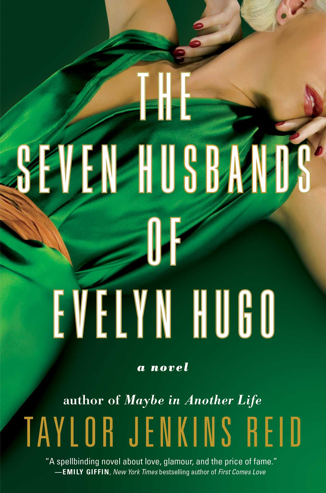
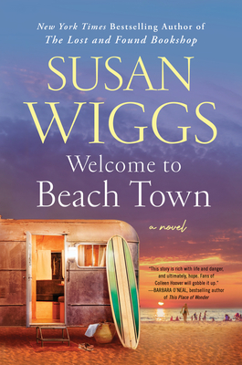
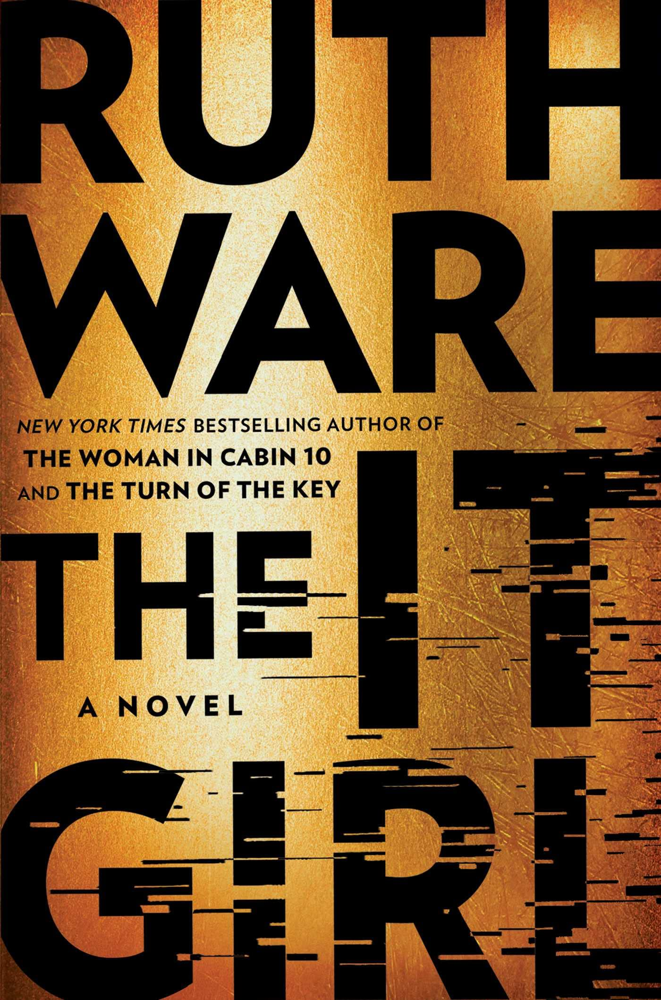
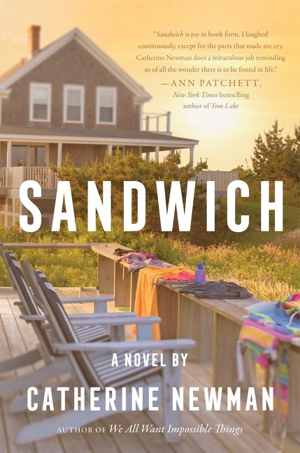

The Seven Husbands of Evelyn Hugo
by Taylor Jenkins Reid
★★★★★
Genre: Historical Fiction
Pages: 400
Published: 2017
Mood: Emotional, Dramatic
Pace: Fast-Paced
About the Book
Aging and reclusive Hollywood movie icon Evelyn Hugo is finally ready to tell the truth about her glamorous and scandalous life. But when she chooses unknown magazine reporter Monique Grant for the job, no one is more astounded than Monique herself. Why her? Why now? Monique is not exactly on top of the world. Her husband has left her, and her professional life is going nowhere. Regardless of why Evelyn has selected her to write her biography, Monique is determined to use this opportunity to jumpstart her career. Summoned to Evelyn's luxurious apartment, Monique listens in fascination as the actress tells her story. From making her way to Los Angeles in the 1950s to her decision to leave show business in the `80s, and, of course, the seven husbands along the way, Evelyn unspools a tale of ruthless ambition, unexpected friendship, and a great forbidden love. Monique begins to feel a very real connection to the legendary star, but as Evelyn's story near its conclusion, it becomes clear that her life intersects with Monique's own in tragic and irreversible ways.
As Evelyn tells her story, the book explores love, ambition, fame, friendship, and the choices people make to create the lives they want.
Why I Recommend It
This is one of my favorite books because the characters feel complicated and real, and the story kept me interested the entire time. Evelyn is not a perfect character, which makes her story even more interesting. I would recommend this book to someone who likes emotional stories, strong characters, and books that are difficult to put down.
You Might Also Like

Welcome to Beach Town
Susan Wiggs

The It Girl
Ruth Ware

Sandwich
Catherine Newman